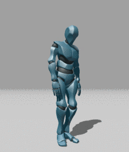
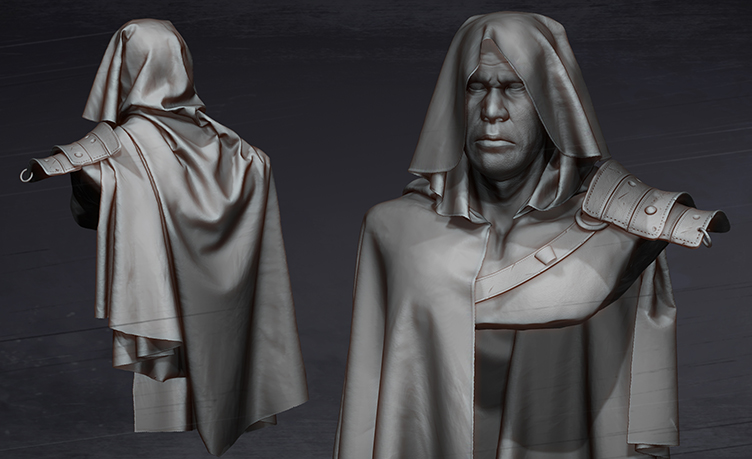
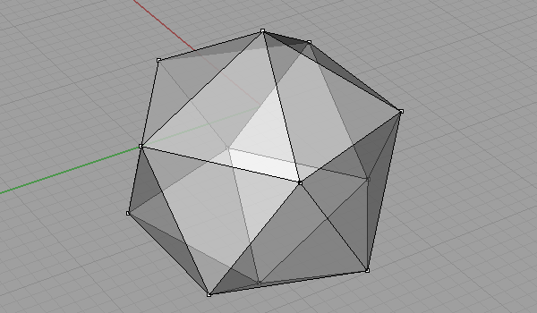

Tema 1: Tipos de diseño 3D
Su historia:
El diseño 3D comenzó en la década de 1960 con los primeros
experimentos en gráficos por computadora. Ivan Sutherland
desarrolló
Sketchpad en 1963, el primer programa que
permitía
dibujar en una pantalla con una pluma óptica. En los años 70 y
80,
surgieron avances clave en modelado, renderizado y animación por
empresas como Autodesk y Pixar. En los 90, con el aumento del
poder
de cómputo, el diseño 3D se expandió a campos como cine,
videojuegos, arquitectura e ingeniería.
Con esto en mente se pueden definir 3 tipos principales de
diseño
3D:
-
Poligonal: Este es el estilo más popular. Usa
polígonos (caras, vértices, aristas) y se aplica en
videojuegos,
cine, animación, realidad virtual, etc.

-
Esculpido: Similar al modelado con arcilla
digital, permite crear formas muy detalladas. Se usa para
personajes realistas, criaturas y arte conceptual.

-
Paramétrico: Usa reglas y parámetros.
Fundamental
en ingeniería, arquitectura y diseño industrial.

En este curso vamos a ahondar principalmente en el
diseño
poligonal por su facilidad de aprendizaje y su
versatilidad en múltiples industrias.